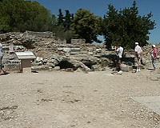
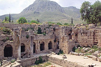
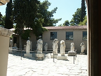
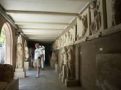

Agora - 'The Bema". In the background the Acrocorinth. |

The theater at the Temple of Apollo in Corinth, Greece. |
Our guide lecturing about the Apollo site. |

Stones in the theater at Corinth. |
|

Ruins in the Agora. |

Some of the ruins at the Apollo Temple in Corinth. |

The agora for the Apollo Temple |

Corinth Archaelogical Museum |

|

Statues and wall sculptures |

More detail of statues |

Port of Navplion, Greece |